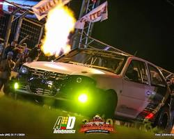
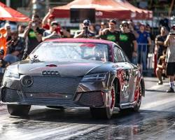
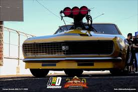
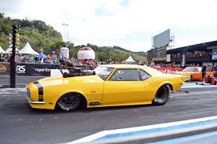

O que é o evento Armageddon?
O evento Armageddon reúne os carros mais rápidos do Brasil, Argentina e Paraguai em uma competição mata-mata. A principal característica é que a pista de 201 metros (ou 400m em algumas edições) não recebe tratamento químico (cola) para aumentar a aderência.
Isso nivela a competição, tornando-a imprevisível, pois a habilidade de tracionar depende mais do acerto mecânico do carro e do piloto do que da condição da pista. O evento é conhecido por ser "de quem passa na frente", sem cronometragem oficial para fins de classificação de tempo, focando apenas no resultado da largada.
Ranking de Pilotos
- Josimar Hudema - Area 43
- Títulos: 5
- Carro: Opala V8 Blower 4x4
- Tração: Integral
- Chavinsky - Area 43
- Títulos: 3
- Carro: Gol 4x4
- Motor: AP
- Cadu Moreira - Area 43
- Títulos: 2
- Carro: Chevette "Godzilla"
- Tração: Integral
Termos da Arrancada
No Prep
Pista de asfalto cru, sem tratamento químico (cola VHT) para aderência. Nivela a disputa, exigindo acerto mecânico e braço do piloto para o carro tracionar em vez de apenas potência bruta.
Outlaw (Fora da Lei)
Categoria vale-tudo. Regulamento mínimo ou inexistente. Não há limites restritivos para motor, peso ou pneu. Você monta o monstro que seu dinheiro e capacidade técnica permitirem.
Top da Lista
O líder isolado de um ranking fechado regional. É o piloto número 1 que sobreviveu aos desafios e venceu todos os adversários de rua da sua área.
Showroom de carros




Referências
Para ver os resultados oficiais, acesse o Perfil Oficial do Armageddon.